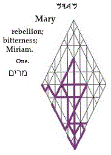

Mary
You are free
m
of Pharaoh, to your thinking
r;
but he will
pursue
y
you in the seas of humanity
m,
relentlessly
m.
Fantasies
r
about avoiding
y
or outwitting
m
him will weigh you down and drown
m
you. Messiah
r
comes
y
to rescue
m
you from your duress
m:
your King
r
will set you
y
free
m.
Gematria
290
xr:
Messiah
r
will transform you
x;
Numerology
56
wn
>
11
ay
>
2
b:
for Sons of Man
n
are wed
w
to the Presence
y,
the Lord
a
of Creation
b.
Targum:
Empty
m
your mind
r
of every expectation
y
and concern
m.
|
site |
Font Stepping Stones |
book |